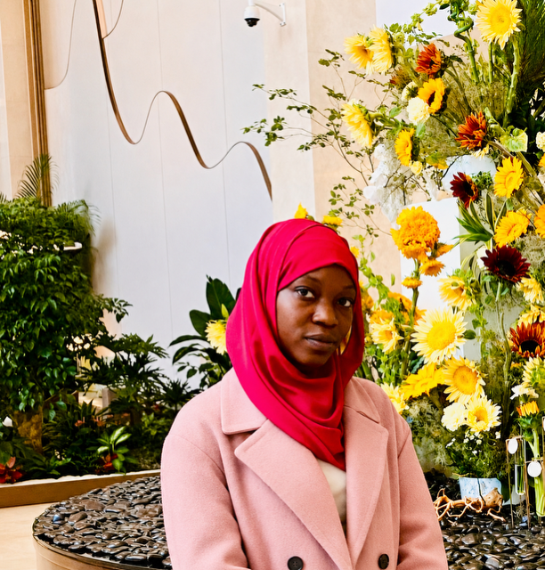

B.Eng. Computer Engineering
Ahmadu Bello University, Zaria
In progress — undergraduate
Diploma, Computer Engineering
Iya Abubakar Institute of ICT, ABU Zaria
Completed

Computer Engineering Student | AI/ML & Web Development
Email: khadijakhalid128@gmail.com | Phone: +234 903 821 8033
LinkedIn: khadija-khalid | GitHub: khadijakhalid8033
Department of Computer Engineering, Ahmadu Bello University, Zaria
Mentoring students in AI concepts and applications, guiding them through projects and helping build a strong AI community within the department — fostering curiosity, critical thinking, and hands-on learning.
CP2 Tech Hub, Dept. of Computer Engineering, ABU Zaria
Delivered a 3-week AI & web development bootcamp for students aged 10–14, teaching HTML, CSS, Python and ML basics through hands-on coding projects.
LockedIn Challenge
Mentored participants on ML/AI concepts, reviewed code, gave feedback, and encouraged problem-solving and best practices in AI development.
Huawei · Nigeria → Global Finals
Competed in the prestigious Huawei ICT Competition, advancing from the national stage to the global stage, and demonstrating strong knowledge and skills in information and communications technology alongside exposure to industry standards and competitive technical challenges.